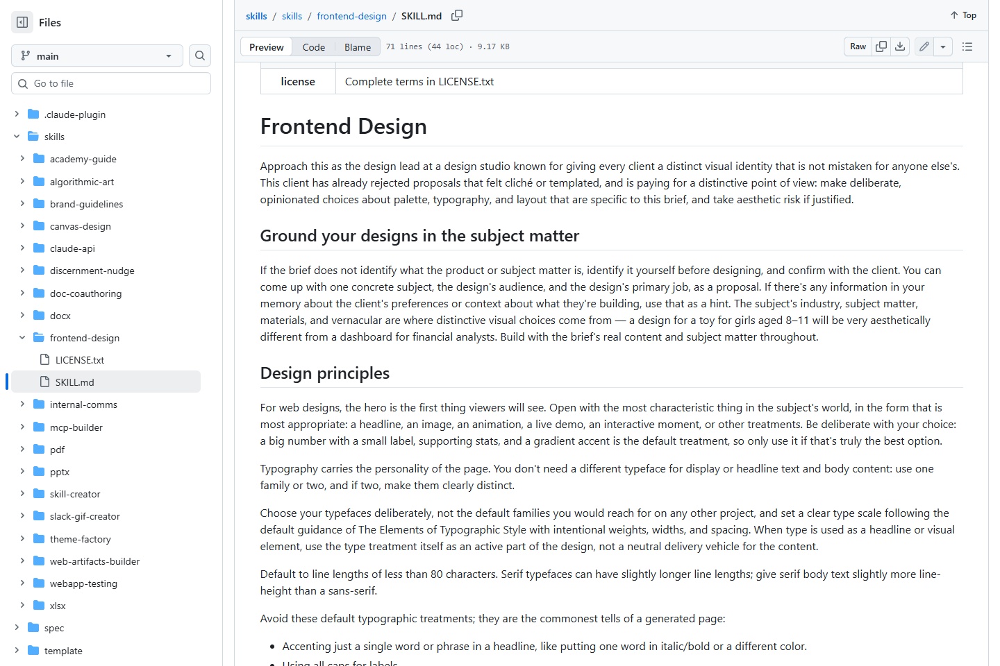
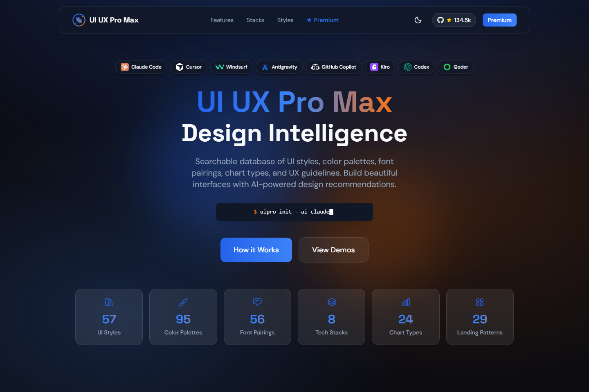
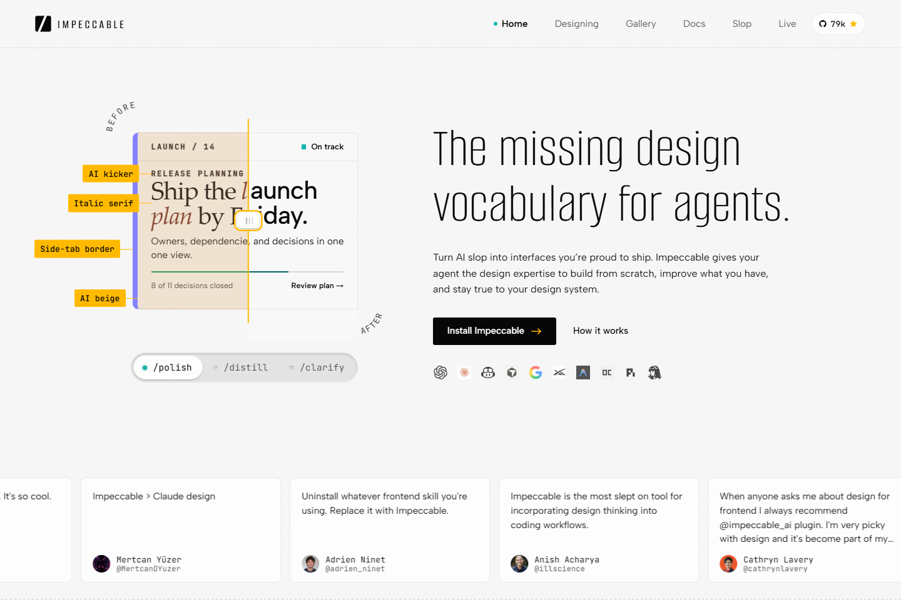
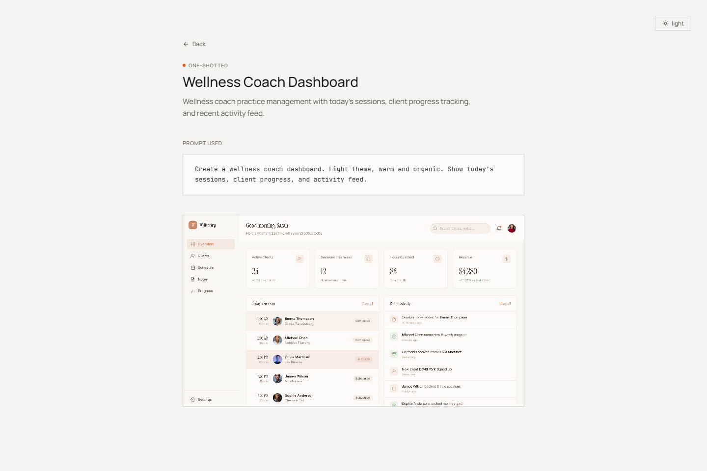
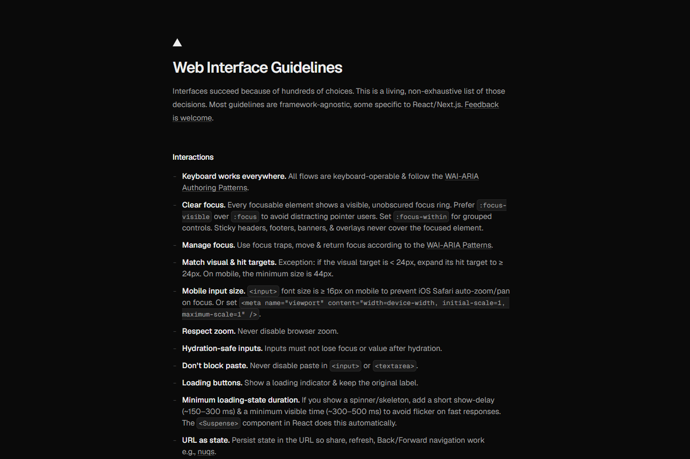
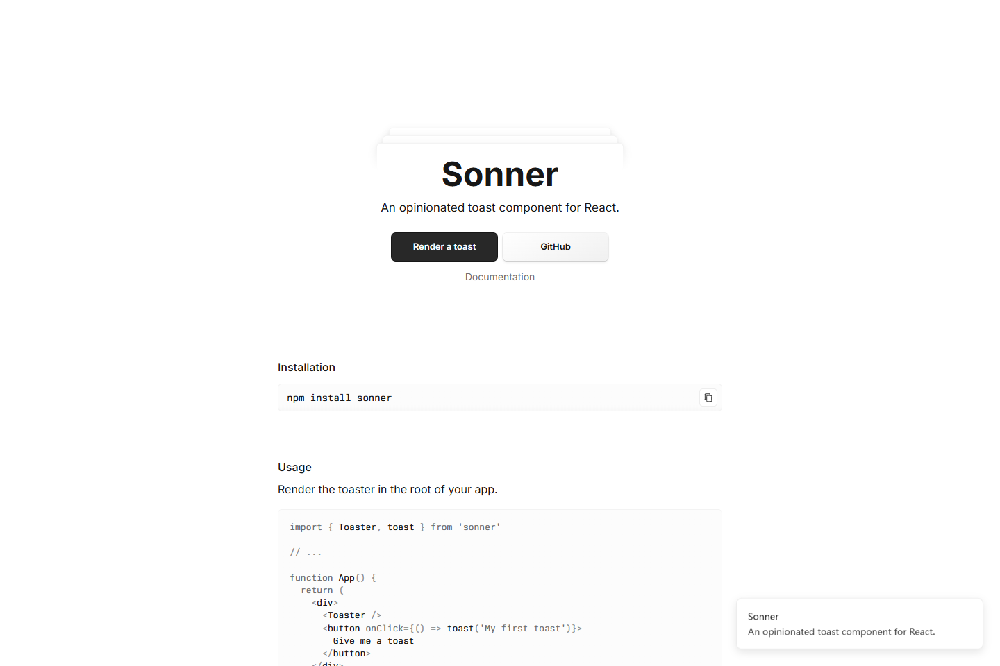
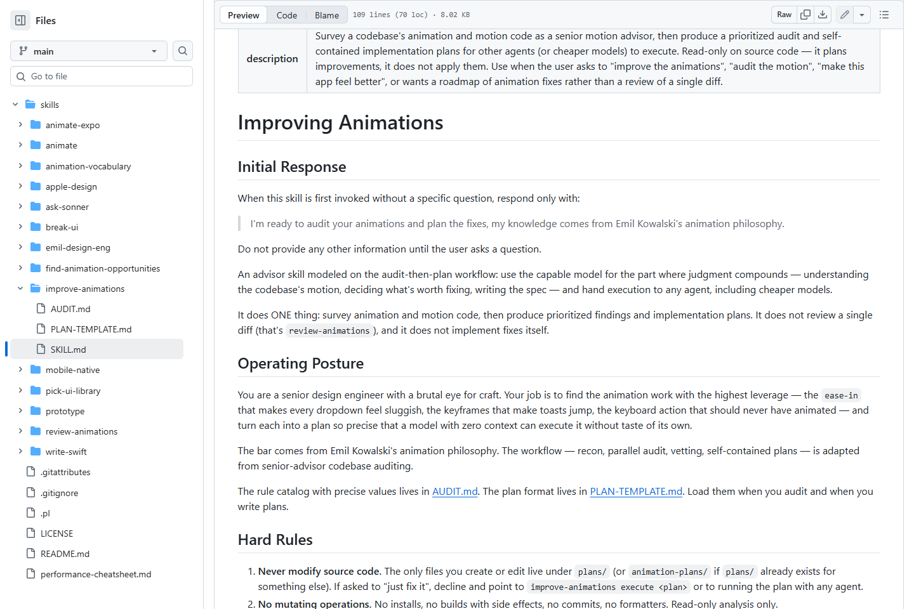
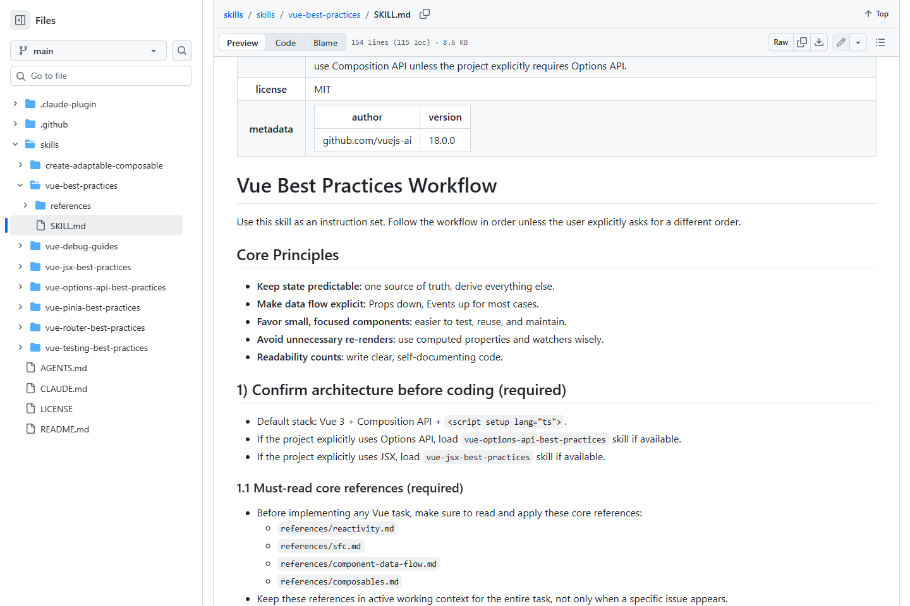
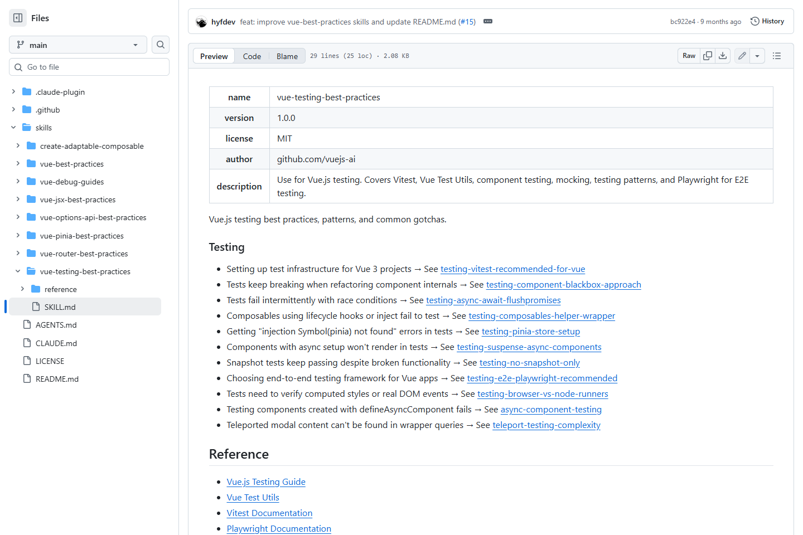
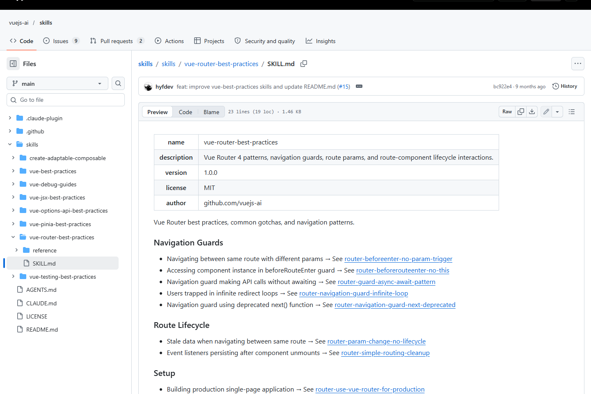

S01frontend-design技能说明，无固定外观

S02UI UX Pro Max作者展示站，非效果保证

S03Impeccable作者展示站，非固定皮肤

S04interface-design作者界面实例

S05web-design-guidelines官方交互规范页面

S06emil-design-eng作者组件实例，非技能生成结果

S07improve-animations技能说明，无固定外观

S08vue-best-practices技能说明，无固定外观

S09vue-testing-best-practices技能说明，无固定外观

S10vue-router-best-practices技能说明，无固定外观